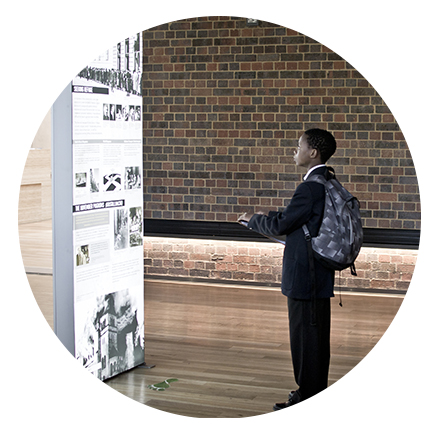
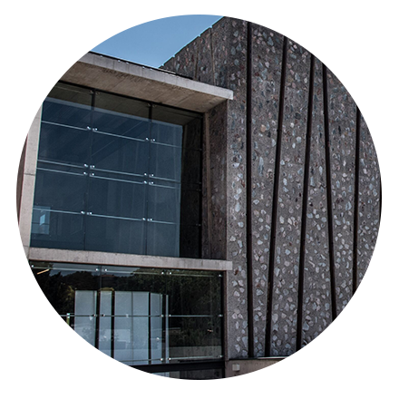
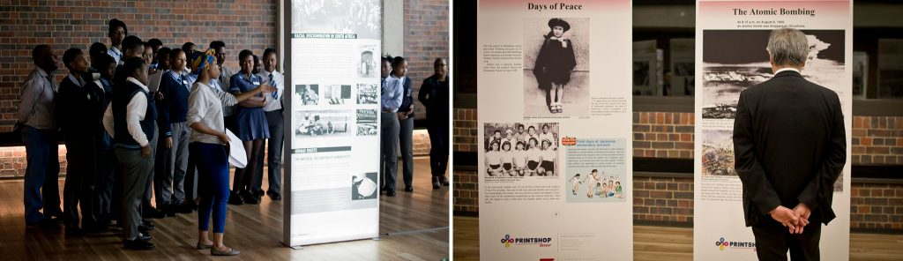

BE ADVENTUREOUS:



Formal High School curriculum-based support content for educators and learners that incorporates new, exciting, experiential methodologies;
Working with university and student groups by organising tailored programmes, as well as study tours to Poland, Germany and Rwanda;
Projects and events concerning genocide, with a particular emphasis on the Holocaust and the genocide in Rwanda;
Designing and facilitating programmes for corporates, small businesses, educational institutions and NGO’s.
Education

Holocaust & Genocide
We Are Stardust: Protecting the Child From Pietas
Out the Box: A Glimpse into 20 Years of Queer Archiving
In Whom Can I Still Trust?
Germany’s Confrontation with the Holocaust in the World
Janusz Korczak - Reformer of the World
Raoul Wallenberg – Man Amidst Inhumanity
The Holocaust: Lessons for Humanity